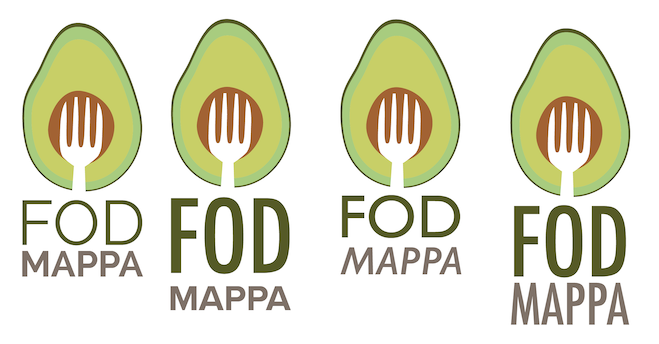

Kasey Yang
Fodmappa
Course project
Role: UX Designer
FODMAPPA is meant to be an app that allows people suffering from IBS find healthy, low-FODMAP foods for their diet and track the foods they are eating. There is an additional aspect that allows users to find coupons for low-FODMAP foods near them and connect with others who suffer from IBS to discuss problems they have in common.
Software used: Adobe Illustrator, XD
Logo Creation
AI began sketching logo concepts to begin. I developed a mock of the strawberry logo, before realizing that strawberries are, in fact, not a low-FODMAP food to begin with. So, I did further development on the book logo. However, I ran into some problems when it came to scaling because there were so many small details that were easy to forget. So upon further trial and error, I landed on the avocado style logo with a fork in it. It represents the general mission of the application, without providing too many details and still able to be scaled down.
Research
Before diving into the actual UI, I did research on other similar food-related apps to see what could be done well, and what could be improved on things that already exist. In particular, I looked at Cara, which is a "food, mood, and poop tracker" available on mobile devices.
From Cara, I was able to find things that I thought shouldn't be included like confusing UI, unlabelled icons and graphs, and too bright of a color scheme. I was also able to draw inspiration from what worked well, such as easy to follow data visualization and displaying straightforward information that the user does not need to interpret.